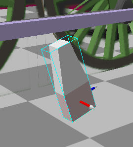

A Steam Loco for MSTS Using 3DCanvas
by Paul "decapod" Gausden
Chapter 5 - More Rods and Animation
We need to add a few more moving parts now. The main parts then require animating with the Rod animator plugin before we add the final few moving parts - to do all of this by hand would have taken some time, the plugin helps a lot here.
I'm not sure what all the parts are called, please excuse my lack of knowledge on these items... I will refer to them by their colours on this image.
Back to the plan:
I have chosen the pivot points for the remaining objects (pink with white cross) at points where rotation will occur - usually at joints or bearings.
The new objects:
Red - an object fixed to the wheel - no need for great detail here as it will be covered by a dark texture. I will create a basic cube, resize it to 0.1,0.2,0.2, extrude the top face by 0.3 and rotate the whole object in the X axis by -17 degrees (from the plan).

To position it, drag the group containing the object onto the Wheels2 group and change the Y and Z positions to -0.35, 0.00. Then by constraining the Z axis motion, drag with the mouse until it touches the piston rod bearing.
Finally, to fix it into position, drag the new object out of the group and into the Wheels2 group itself.
Orange - This rod behaves a bit like the driving rod from the piston.
To build this, I did a copy and paste of the wheel link rod onto the scene. Then copied the rear bearing and pasted this onto the new Rod - then set its position to 0,0,0 and dragged the bearing into the same group as the rod.
Selecting each object and running the Optimize operation removed the textures I had applied to the original object (makes it easier to work on). I then scaled the rod to 1.43 long, and reduced it's width to 0.05. I also scaled the bearing object size down slightly. This moved the rod away from the pivot, so by selecting two diagonal points on the end of the rod and by running the shift centre on selection plugin, the position was restored.
Next I selected all the *edges* on the other end (away from the bearing) and used the Y axis on the edit control (bottom right) to reduce the end height by about 60% to give the rod some taper. Now from the plan we can see this group needs to be a child object of the wheel at Y = 0, Z = -0.1 (the group was also given a more meaningful name).
Once again, by constraining Z axis movement, I use the mouse to position the bearing against the Red object.
You should now be able to duplicate (using copy and paste) both the Red and Orange objects on the left side of the loco - you may need to use the Flip object operation on the orange rod so that it faces outward correctly. Also note the quartering affects the positions and that the rod on the Left must also be a child of the Wheels2 group on the right and not the Wheel group on the left (just to add to the confusion).
Now for the fun part - we can (and need to) animate all these parts before doing the rest.
Starting with the easiest...
- Select the front driving wheel on the right side and run the "MSTS Rod Animator" plugin. You should see something like this. If it does not, make sure you have the latest plugin from the Highworth web site.
- Next Select the rear driving wheel on the right side and run the animator again.
This time you will see Rod01 and Rod02 in the top box - select Rod01, Tick the box "Animate Rod as Wheel Link" and press Start (no error this time?).
- Select the same wheel again and repeat the process in 2 for Rod02 (which is the wheel link on the left)
- Select the centre wheel on the right and run the plugin again. This time you should see the PistonRod groups added in lesson 4 - select the one on the right side (PistRodRight in my case). In the second list box, scroll down till you find the right piston group added in lesson 4, which should be a child of the main object (PistonRight). Enter the Angle (2.7 not 2.9 as I had in the last lesson - I have adjusted the Cylinder object rotation too). Enter the rod length of 3.43m.
Press Start and... Oh dear it missed!
This was where I realised the Engineer plugin builds objects slightly above zero to stop the wheels sinking into the rails so my calculation of the cylinder position was low - easily adjusted by dragging the Cylinder group up with the right mouse button so the piston is correctly centred.
- Select the centre wheel on the right again and repeat the process for the Rod and Piston on the left of the model.
- Select the centre wheel on the right once more and start the plugin again. This time, select the Orange object group, Tick "No Piston Object" and enter 5 degrees (calculated from the plan - measured to the wheel centre from the rod end) and the rod length of 1.43m. Press Start.
- Finally repeat the process for the copied reverser objects on the left side.
Now ***ignore everything*** except the top line "Selected group Wheels1" and set the "Key Frames" to 16 - this is only necessary if you want smooth animation of outside cylinders. The default 8 key frames gives rise to "bounce" in the rods, however 16 requires a small change to the S file later.
If you just have a wheel link, the Engineer plugin will already have animated everything for you. Press the "Start" button and the program will error ! (it has however already completed its work with the front wheel as nothing is connected to this wheel.
To see what you have actually done, in the 3D canvas top menu select "View" and "Animation toolbar" and press the Animate button that appears at the bottom. Now press the "Play" button - everything should move with the correct motion.
Remember to press the Animate button again before you do anything else, or you will be left in animation mode and anything you do will apply to animation and not the original model. (the cause of many hiccups with models).
Yellow - The pivot for this object is attached to the main frame, so the object should be in a child group of the main group.
Starting with a cube scaled to 0.05, 0.30, 0.13 - I shift the pivot point to the top face with the Shift centre plugin. Select the top face again, this time switch to "edit using object coordinates" on the top toolbar. As you move the mouse over the red bar on the edit control, it should change to a plain cross. Now drag slightly so the face rotates a few degrees.
Set the extrude operation to 0.15 with 0.0 bevel, and extrude the top face.
Repeat the process after rotating the new top face a little more. Finally I also rotated the bottom face of the object slightly for a more correct shape.
The new object group was dragged into position just touching the end of the Orange object and the position (1.22, 1.48, 1.50) compared with the values obtained from the plan (not far out).
I copied and pasted this object back into the main group again and set the new group position to -1.22, 1.48 1.5 for the left side object (and renamed the new group to RevLeft).
Due to the quartering, this new object on the left needs to be rotated slightly. This is done in a similar way to the rotation we did with the top face, except this time with the whole object selected.
In Detail:
- Select "Edit using object coordinates" orientation mode
- Select the object
- Drag the cursor over the Red Axis bar of the Edit control until the object matches the bottom edge of the end of the orange rod.

Green - This rod was created in the same way as the Orange rod (without the bearing) and was positioned according to the plan. This rod is not animated so it could be part of the main group.
The way unoptimized levels of detail work in 3D canvas is that any object not in the main group is removed over 700m - for this reason, I tend to keep small static parts in a group (or two groups split by which ACE file they use) - usually this division is above and below the footplate (I usually call these groups UnderBits and TopBits).
A copy of this rod is placed in the same position on the Left side - and the object on the left was moved into the same "UnderBits" group.
Blue - This piece pivots on a point attached to the body, so it needs to be in a child group of the main object.
It is a cube resized to 0.03, 0.8, 0.055 with the bottom end extruded by 0.02 and shrunk by 50% in the same way as the red object - to give a rounded end. The pivot point is then shifted to the centre of the top face (which I also made slightly wider as the plan shows the rod is not parallel). The group is placed under the Main group, given some meaningful name and positioned according to the plan.
Purple - This is a cube scaled to about 0.03, 0.055, 0.6 and the centre shifted to the front end. This object's animation is directly linked to the blue object so it needs to be a child group of the blue objects group. This new child group can be positioned exactly at 0, -0.79, 0.
You should end up with an L shape like this:
Now, by using the "Edit using object coordinates" orientation mode, rotate the Blue and Purple objects, by dragging the mouse over the axes of the Edit control, in turn until they line up with the connection coming out from the piston:
This is only a small change on the right side, but a bit more of a change on the left - it usually takes a few movements of each till the purple object lines up OK.
Once you have the Blue and Purple rods on the left side as well, we are ready to complete the animation manually.
On the Animation Toolbar, turn on Animation mode (press the Animate button).
Now get a close look at the yellow object on the right side:
- Press the Step forward button once. You may notice the Orange object move slightly.
- by using the same technique as you used to rotate the Blue and Purple objects last, rotate the yellow object so that it's lower part remains just in contact with the end of the Orange object.
- Repeat steps 1 and 2 15 more times!
- Once you have finished this side, press the Rewind Button and do the same with the Yellow object on the left side.
Now take a close up look at the Blue and Purple objects.... and you guessed it.... do the same again. This time it takes a bit longer because of the juggling of both objects - the aim is to keep the end of the purple object in the same position relative to the connection with the piston object (as if it were fixed to it).
Don't worry too much about small errors in positions with these animations, they all get smoothed out when running.
Now cull those hidden faces again! (and re-optimize each object you do this to) - Using the count triangles plugin, I can see I'm still only at 2388 polygons.
At this point I'll start mentioning some bits about texturing - I have updated the texture slightly to fit in the bearing ends and the colour and lining for the Cylinder - note these do not need to be the same shape as the plan, you can stretch textures, though be careful if you are adding noise (later lesson) as this will stretch too.
All the currently un textured parts will be at least grey so the first thing I do is select a small area of texture (in this case a few pixels square from the centre of the con rod) and use the fill tool on everything.
When applying a texture to a whole object you can preview the way in which the texture will be applied by switching to the "Highlight selection showing operation direction" mode - it gets a bit confusing so I tend to switch the mode off after finding the correct orientation.
This basically shows how a square texture will be applied according to which of the 5 orientation modes is selected - if you switch orientation mode, the square texture pattern changes accordingly.
The Default orientation mode "snaps" to right angles.
Screen orientation basically overlays the square on the screen viewport - you just adjust the model to the viewport.
World orientation is always fixed.
Object orientation is similar to world, but is affected by object rotation.
Face orientation - not quite sure about this one yet.
The bearing objects are still isolated so I can use the fill tool to give them the circular pattern on the front face (using default orientation). Filling is actually good for efficiency as a point on the model need only be represented once - if you paint each face separately, a single point needs to be represented by more than one "vertex" - which includes the texture coordinate.
I want a similar (but more central circle) for the piston object - for this I adjust the texture cropping and just select the single square face in the middle and press the "Apply Material" Object Operation button on the left (don't use the paintbrush button on the right - this tends to muck up the object normals giving odd lighting effects).
For the tapered rods, I crop the texture, select "Edit using face orientation" (seems to produce the mapping to what I want), then select the outer face and use the "Apply Material" Operation on each one.
This then needs a slight adjustment on each to taper the texture - select the face you want to adjust, then press the UV Edit operation (the one with the red grid on it) - a window pops up and you can use this to zoom in and adjust texture points. By squaring up the mapping, the texture will taper with the face.
For the cylinder texture, I selected the faces I wanted to cover, but could not find an exact orientation match.
I applied the material with the default mode, then selected the "Operation Adjust Tool" (two round arrows) on the right toolbar and selected the cylinder object. Then by dragging on the red axis of the edit control (as if you are rotating an object) the texture was aligned correctly.
I added a few other slight texture updates and exported to MSTS...
NOW BEFORE YOU RUN IT IN THE SIM!!! - We are now using 16 frame animation so you must edit the S file and change the line (near the end of the file):
animation ( 16 30
to
animation ( 16 60
or your wheels will rotate at half speed.
Poetry in motion....
To know about locomotive valve gears go to:- http://www.tcsn.net/charlied and look for the Windows version.
Q & A
Q: Daryn Dunkley
I will try to muddle through this and the last part hopefully by the weekend. As a forethought, what would be the best way of making an extended crankpin? (Parenting and general modelling) The met tank will need them for the rear drivers with the rods being spaced out from the wheels for the Con rods to sit on the insides.Daryn Dunkley
A: Paul Gausden
I'd really need to look at the drawing to help with how to build it. It sounds like you would need to move the current wheel link outwards, put in an object attached to the wheel, much like the red one in the Baltic. Add the rod, then add another object attached to the wheel that links the end of the new rod with the wheel link. On parenting, if it rotates along with the wheel (i.e. is fixed to the wheel), it should be an object in the wheel group. Child groups appear when you have bearings that rotate.
Q: Daryn Dunkley
Apologies for not being as clear as I could of been. The way the rods are set out are to the same way the Midland compounds where laid out on the outside cylinders. To quote F.J.Roche "The coupling rods are secured outside the connecting rod".
I am presuming of course that you can either attach the crankpin to either the rods themselves or the wheel in the right places for them to look right? hope that this clears it up a little!
A: Paul Gausden
I was looking at the wrong part before, got it now - you just need a small cylinder object (6-8 sides, with the end faces removed) attached to the wheel in the right position. If you attach it to the rod it will not rotate - this will only be noticeable if you use a "dirty" texture. If the texture is uniform you can save a few polys by attaching to the rod and removing the faces that point downwards.
Q: Richard Osborne
Got the hang of the extrude tool - the trick is to press twice rather than double-click. If there's not enough interval between clicks the points don't turn blue.
Have to admit failure with the rod animation. It goes too far against the grain not to call things by the right name - does this matter?
At the moment I set the rods in the plug-in - the rods jump to the anticipated position then just rotate with the wheel - welded solid. I expect the problem is with the hierarchy. When using screenshots could you make more of the hierarchy shots - they're a bit too abbreviated to see the whole picture. I'd assume you set the stb connecting rod with the stb piston in the plug-in. Could you show a screenshot of the plug-in please?
Getting to know the rest of the program, found the facility to split a triangulate a face after one face of the tanks (funny shape on the H16) played tricks - the port tank was OK but a copy, paste. flip for the stb tank caused problems. Still took ages - 5 second job in TSM!
A: Paul Gausden
>Hi Richard,
You'll find the extrude tool solves just about all problems for complex shapes that can't be built out of primitives - very useful
I have found that it really doesn't matter what you call the parts, except for the ones that MSTS animates automatically (bogie1 & 2, and Wheels11, 12 etc).
I'll have some time tonight and will run through the rod animation again, with hierarchy printouts.
The main rods and pistons group should look a bit like this:
Main
+----LeftPiston
+----RightPiston
+----RevLeft (yellow)
+----RevRight
+----PistRevLeft (blue)
| +----SubPistRevLeft (purple)
+----PistRevRight
| +----SubPistRevRight
+----Wheels1
| +----Wheel
+----Wheels2
| +----Wheel
| +----ConRodLeft
| +----ConRodRight
| +----RevLinkLeft (orange part)
| +----RevLinkRight
+----Wheels3
| +----Wheel
| +----Rod01
| +----Rod02
etc
Odd about the tanks, it really should just be copy, paste as child, position and flip operation in 3D canvas and should take a few seconds. Did the shape have a concave face? - in which case triangulate or edge operations are the correct remedy.
Q: Richard O
The H16 tanks have a double bend in front of the cab - still can't see why one side works & the other doesn't. It's a funny shape from the side as well - made it in fsds & imported it as a .dxf file.
I was only trying to get the conrods & crossheads to animate. I've lost the lot now, trying to clear errors in the animation.
Where is the animation information held? In TSM I can find it with F2, copy from a part which works and load it to another. Can I transfer information from a previous version or do I have to re-run engineer? Can I merge projects? strip down a previous version to just wheels and rods and import it.
The program's hopelessly unstable; every 4th or 5th operation the b*** thing crashes, especially with plug-ins. The split face is good, used it to move the valve chest. Is it possible to split the parts and keep them in the same place - you still have to delete the original chosen faces.
Wouldn't it be good to combine the best features of 3dCanvas with the best features of TSM!! I suppose you can - it's called Autocad & costs a fortune.